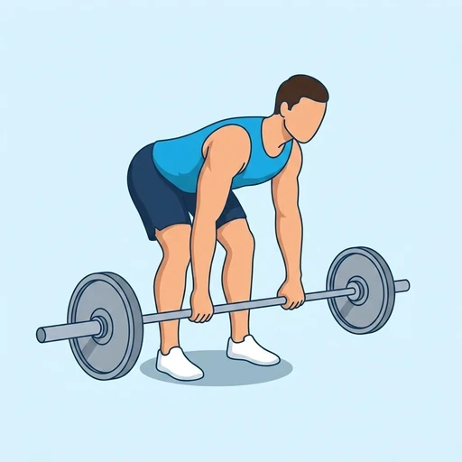
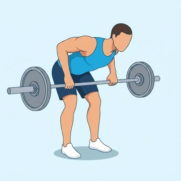
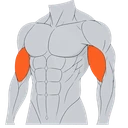

Pendlay Row
A strict barbell row performed from a dead stop on the floor between reps, torso parallel to the ground. Popularized by coach Glenn Pendlay.
Back · Barbell · Intermediate


Muscles worked by the Pendlay Row
Primary
Secondary

BicepsBiceps BrachiiAlso called: lats, lat, latissimus dorsi, latissimus, back wings, rhomboid.
Equipment
Also called: bar, olympic barbell, straight bar, olympic bar, power bar.
How to do the Pendlay Row
- Load a barbell and set it on the floor.
- Hinge at the hips until your torso is parallel to the ground, knees slightly bent.
- Grip the bar slightly wider than shoulder-width with an overhand grip.
- Explosively pull the bar to your lower chest.
- Lower the bar back to the floor under control and pause before the next rep.
- Repeat.
Form tips
- Dead-stop each rep on the floor — no touch-and-go.
- Keep your torso locked at roughly 90 degrees; do not use body english.
- Drive the elbows up and back, not out to the sides.
At a glance
| Body part | Back |
|---|---|
| Category | Strength |
| Force type | Pull |
| Mechanic | Compound |
| Difficulty | Intermediate |
| Equipment | Barbell |
| Goals | Hypertrophy, Strength |
| Tags | Knee safe, Shoulder safe |
| MET | 6.0 (metabolic equivalent, for calorie estimates) |
| Unilateral | No |
| Bodyweight | No |
| Dataset id | pendlay-row |
Pendlay Row in German & Spanish
| German | Pendlay-Rudern |
|---|---|
| Spanish | Remo Pendlay |
Descriptions, instructions and tips ship in all three languages in the JSON.
Exercise data (JSON)
The record below is exactly what exercises.json ships for this exercise — names, descriptions, instructions and tips in English, German and Spanish.
{
"id": "pendlay-row",
"name_en": "Pendlay Row",
"name_de": "Pendlay-Rudern",
"name_es": "Remo Pendlay",
"description_en": "A strict barbell row performed from a dead stop on the floor between reps, torso parallel to the ground. Popularized by coach Glenn Pendlay.",
"description_de": "Ein strenges Langhantelrudern mit totem Stop auf dem Boden zwischen den Wiederholungen, Rumpf parallel zum Boden. Bekannt gemacht durch Trainer Glenn Pendlay.",
"description_es": "Un remo estricto con barra realizado desde una parada muerta en el suelo entre repeticiones con el torso paralelo al suelo. Popularizado por el entrenador Glenn Pendlay.",
"category": "strength",
"force_type": "pull",
"mechanic": "compound",
"difficulty": "intermediate",
"equipment": "barbell",
"body_part": "back",
"primary_muscles": [
"latissimus_dorsi",
"rhomboids",
"trapezius"
],
"secondary_muscles": [
"biceps_brachii",
"erector_spinae",
"posterior_deltoid"
],
"goals": [
"hypertrophy",
"strength"
],
"tags": [
"knee_safe",
"shoulder_safe"
],
"variation_group": "row",
"is_unilateral": false,
"is_bodyweight": false,
"instructions_en": [
"Load a barbell and set it on the floor.",
"Hinge at the hips until your torso is parallel to the ground, knees slightly bent.",
"Grip the bar slightly wider than shoulder-width with an overhand grip.",
"Explosively pull the bar to your lower chest.",
"Lower the bar back to the floor under control and pause before the next rep.",
"Repeat."
],
"instructions_de": [
"Belege eine Langhantel und lege sie auf den Boden.",
"Beuge die Hüften, bis der Rumpf parallel zum Boden ist, Knie leicht gebeugt.",
"Greife die Stange etwas breiter als schulterbreit im Obergriff.",
"Ziehe die Stange explosiv zur Unterbrust.",
"Senke die Stange kontrolliert auf den Boden und mache vor der nächsten Wiederholung eine Pause.",
"Wiederhole."
],
"instructions_es": [
"Carga una barra y colócala en el suelo.",
"Bisagra en las caderas hasta que el torso quede paralelo al suelo con las rodillas ligeramente dobladas.",
"Agarra la barra ligeramente más abierta que la anchura de los hombros con un agarre en pronación.",
"Jala la barra de forma explosiva hacia el pecho inferior.",
"Baja la barra al suelo con control y haz una pausa antes de la siguiente repetición.",
"Repite."
],
"tips_en": [
"Dead-stop each rep on the floor — no touch-and-go.",
"Keep your torso locked at roughly 90 degrees; do not use body english.",
"Drive the elbows up and back, not out to the sides."
],
"tips_de": [
"Jede Wiederholung mit totem Stop auf dem Boden – kein Abprallen.",
"Rumpf bei ca. 90 Grad fixiert halten; kein Schwung mit dem Körper.",
"Ellenbogen nach oben und hinten führen, nicht zur Seite."
],
"tips_es": [
"Cada repetición debe comenzar desde el suelo sin rebote.",
"Mantén el torso fijo a aproximadamente 90 grados; no uses el impulso del cuerpo.",
"Lleva los codos hacia arriba y atrás, no hacia los lados."
],
"met": 6.0,
"images": {
"flat": {
"start": "images/flat/pendlay-row-start.webp",
"peak": "images/flat/pendlay-row-peak.webp"
}
}
}Fetch just this exercise
const { exercises } = await fetch(
"https://exercise-dataset.com/exercises.json"
).then(r => r.json());
const ex = exercises.find(e => e.id === "pendlay-row");Free for personal and commercial in-app use with attribution (“Exercise data by RepDB”) — see the license and ready-made attribution snippets. Redistributing the data as a dataset or API is not permitted.